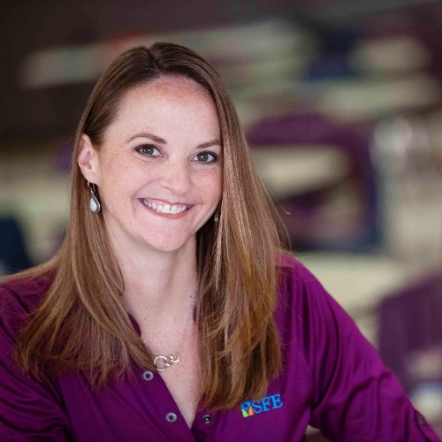

Most school food problems live in the gap between what the USDA requires, what a kitchen or factory can actually produce, and what kids will eat. After 18 years and 130+ districts, that gap is where I work.
Not theory. Outcomes delivered across hundreds of districts and a thousand-plus buildings, in roles spanning operations, menu standards, and the software that ties them together.
Cost reduction and higher participation are usually a trade-off. I've delivered both at the same time, across 130+ districts.
Researched, procured, and executed the menu planning, production record, and inventory software company-wide. A full rollout, not a pilot.
Ran regional operations across 40 districts, and grew a single district's fund balance by $1M a year. Operations isn't an afterthought here. It's the foundation.
Every engagement targets a problem K-12 food actually faces, whether for manufacturers, school districts, or the software companies that serve them.
Cost-effective, high-participation, compliant menus. The exact puzzle I've solved for 130+ districts, including up to $0.40/meal in savings without losing students.
Districts · OperatorsHelping manufacturers develop items that meet sugar and sodium standards and survive the lunch line, with research and development grounded in what students actually choose.
ManufacturersThe compliance and QA systems I built to support 300+ frontline team members. Audit-ready documentation that holds up under state administrative review.
Districts · ManufacturersI researched, procured, and rolled out menu planning, production, and inventory software across 1,000+ buildings. I know these tools from the inside, as buyer, builder, and operator.
Foodtech · DistrictsFrom opening new district partnerships to launching breakfast-in-the-classroom, à la carte, and new menu programs. Standing up food programs that work from day one.
Districts · OperatorsSenior nutrition-and-operations leadership without a full-time hire. Strategic guidance for teams that need range across menus, compliance, and operations.
All clients
For nearly two decades in K-12 child nutrition, I've designed menus, led regional operations, built compliance and QA systems, and rolled out the back-of-house software that ties it all together. I've worked with over 130 school districts on how to fit every puzzle piece into a menu that's cost-effective, high-participation, functional, and compliant, all at once.
That range is the point. I've been the operator under budget pressure, the dietitian responsible for the standards, and the person who chose and deployed the technology. Most people see one side of K-12 food. I've worked all three.
I speak both languages, because I've worked both sides. Here's what an engagement looks like depending on where you sit.
I've been the buyer deciding which products make the menu. I help you build items that clear the compliance bar, come with audit-ready documentation, and most importantly, get chosen and eaten once they hit the tray line. Product & recipe R&D, formulation guidance, and the operator's-eye view your sales team can't get anywhere else.
Product R&D · Compliance · Go-to-market insightThe exact work I've done for 130+ districts: building cost-effective, high-participation, compliant menus, preparing for state audits, launching new meal programs, and selecting the software to run it all. Savings of up to $0.40 per meal, without losing students at the line.
Menu development · Audit prep · Software selectionNo long discovery decks before we get to value. Most engagements start small and scale only if it's working.
A free 30-minute conversation to pinpoint where compliance, cost, production, or participation are working against each other, and whether I'm the right fit.
A defined project with a clear deliverable: a menu redesign, a product evaluation, audit-readiness, or a software selection. Fixed scope, fixed price, no surprises.
If it's delivering, we continue as a retainer or fractional leadership arrangement. You get senior range across menus, compliance, and operations without a full-time hire.
A 30-minute call to talk through where compliance, production, and participation are pulling against each other, and what it would take to fix it.
Book a consultation →